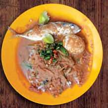

Unique Dishes
Whether you’re or a foodie or not, your trip to Langkawi would be incomplete without sampling the wide variety of Langkawi’s tantalising cuisine. During your stay, however long it might be, don’t miss your opportunity to savour delicious eats from around the island. With both budget friendly options and fine dining feasts available, you’ll be spoilt for choice in popular tourists’ areas such as Pantai Chenang and Pantai Tengah as well as the more luxe world class hotels. Both will leave your palate with a taste of a truly awe-inspiring travel destination.
Gulai Panas

Gulai Panas is a spicy and hot curry. Served hot, its delicious when drenched over rice and best eaten with sambal belacan and ulam-ulaman (traditional vegetable salad).
Laksa
Its appetising and pungent broth is made with mackerel and aromatic herbs. There are many variations of laksa in Malaysia, and the key ingredient of Langkawi laksa is tamarind which gives the soup a distinctive tangy taste.
Sup Gamat

Gamat is Langkawi’s Ginseng of the Sea! This sea cucumber soup is one of the most unique Langkawi delicacies, boasting with healing properties and an irresistible taste!
Mee Ketam

It is one of the most popular dish in Langkawi. Scrumptious gravy simmered with crab shells for hours gives you a classic essence of the sea. The yellow noodle is topped with fresh flower crabs and served in sweet potato-based gravy along